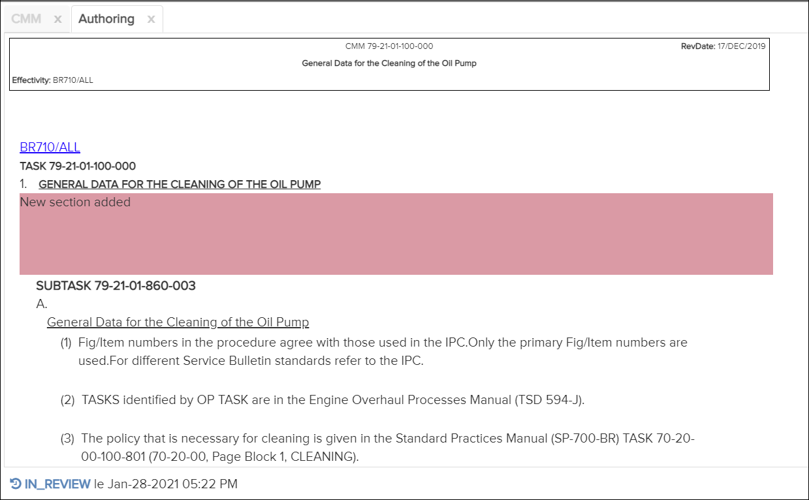

Non applicable pour Pinpoint Standalone Light.
Après avoir apporté toutes les modifications de création de contenu et de figure au brouillon, vous pouvez l'envoyer pour révision.
Reportez-vous à Création de contenu and Création de figures pour les détails de création.
Pour envoyer un brouillon pour révision, procédez comme suit:
-
Cliquez sur le bouton pour envoyer le brouillon pour examen.
Le brouillon affiche l'état "In Review" en bas à gauche du volet Contenu. Le statut du brouillon peut être l'un des suivants:
- En cours - état lors de la création du contenu.
-
Si le réviseur rejette le brouillon lors de sa révision, le statut revient à En cours.
- En révision - état lorsque le brouillon est soumis pour examen.
- Approuvé - état lorsque le brouillon est approuvé par le réviseur.

Onglet Création - État du brouillon
Cliquez sur l'état pour afficher l'historique du brouillon. Dans l'écran illustré ci-dessus, vous cliqueriez sur "In Review" dans l'écran ci-dessus. Le journal Historique apparaît. Par example:Un utilisateur disposant du privilège Peut examiner les modifications créées par l'auteur peut rejeter ou accepter les modifications. Faire référence à Accepter/Rejeter Changements.
Journal de l'historique du brouillon